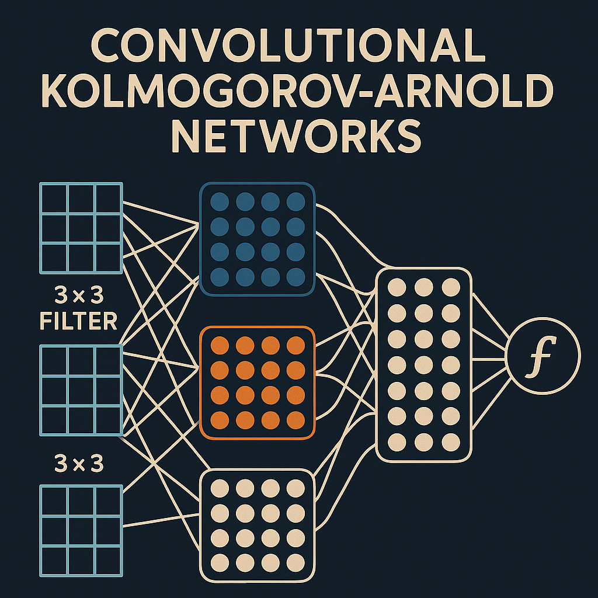

Convolutional Kolmogorov-Arnold Networks: A Deep Dive into Next-Generation Neural Architectures

Introduction
Convolutional Kolmogorov-Arnold Networks (CKANs) represent a groundbreaking fusion of classical mathematical theory and modern deep learning architectures. By integrating the Kolmogorov-Arnold representation theorem with convolutional neural networks, CKANs offer a novel approach to function approximation that challenges traditional activation function paradigms.
Traditional neural networks rely on fixed activation functions (ReLU, sigmoid, tanh) applied to linear transformations. In contrast, CKANs replace these fixed activations with learnable univariate functions, creating a more flexible and theoretically grounded architecture that can potentially achieve superior approximation capabilities with fewer parameters.
Theoretical Foundation: The Kolmogorov-Arnold Representation Theorem
The Kolmogorov-Arnold representation theorem, proven by Vladimir Arnold in 1957, states that any multivariate continuous function can be represented as a superposition of continuous functions of a single variable. Formally, for any continuous function f: [0,1]^n → ℝ, there exist continuous functions φ_{q,p}: ℝ → ℝ such that:
\[ f(x_1, x_2, \ldots, x_n) = \sum_{q=0}^{2n} \Phi_q\left( \sum_{p=1}^{n} \phi_{q,p}(x_p) \right) \]
This theorem suggests that complex multivariate functions can be decomposed into simpler univariate components, providing theoretical justification for the KAN architecture approach.
Architecture Design
Core Components
CKANs maintain the spatial processing capabilities of CNNs while incorporating KAN principles. The key architectural components include:
- Learnable Activation Functions: Replace traditional fixed activations with parameterized univariate functions
- Convolutional KAN Layers: Adapt KAN principles to work with spatial data
- Spline-based Function Approximation: Use B-splines or other basis functions to represent learnable activations
- Hierarchical Feature Extraction: Preserve CNN’s ability to learn hierarchical representations
Convolutional KAN Layer Structure
A typical CKAN layer consists of:
class ConvKANLayer(nn.Module):
def __init__(self, in_channels, out_channels, kernel_size, grid_size=5):
super().__init__()
self.conv = nn.Conv2d(in_channels, out_channels, kernel_size, bias=False)
self.spline_functions = SplineActivation(out_channels, grid_size)
def forward(self, x):
# Apply convolution without bias
conv_out = self.conv(x)
# Apply learnable spline activations
return self.spline_functions(conv_out)Implementation Details
Spline-based Activation Functions
The learnable activation functions are typically implemented using B-splines or other basis function expansions:
import torch
import torch.nn as nn
import torch.nn.functional as F
import numpy as np
class SplineActivation(nn.Module):
def __init__(self, num_channels, grid_size=5, spline_order=3):
super().__init__()
self.grid_size = grid_size
self.spline_order = spline_order
# Initialize grid points
self.register_buffer('grid', torch.linspace(-1, 1, grid_size))
# Learnable spline coefficients for each channel
self.coefficients = nn.Parameter(
torch.randn(num_channels, grid_size + spline_order)
)
def forward(self, x):
batch_size, channels, height, width = x.shape
# Reshape for spline evaluation
x_flat = x.view(batch_size, channels, -1)
# Apply spline activation channel-wise
activated = torch.zeros_like(x_flat)
for c in range(channels):
activated[:, c, :] = self.evaluate_spline(
x_flat[:, c, :], self.coefficients[c]
)
return activated.view(batch_size, channels, height, width)
def evaluate_spline(self, x, coeffs):
# B-spline evaluation using de Boor's algorithm
return self.de_boor_algorithm(x, coeffs)
def de_boor_algorithm(self, x, coeffs):
# Simplified B-spline evaluation
# In practice, use optimized implementations
x_clamped = torch.clamp(x, -1, 1)
# Linear interpolation for simplicity (extend to higher orders)
grid_indices = torch.searchsorted(self.grid, x_clamped)
grid_indices = torch.clamp(grid_indices, 1, len(self.grid) - 1)
x0 = self.grid[grid_indices - 1]
x1 = self.grid[grid_indices]
# Linear interpolation weights
w1 = (x_clamped - x0) / (x1 - x0)
w0 = 1 - w1
# Interpolate coefficients
y0 = coeffs[grid_indices - 1]
y1 = coeffs[grid_indices]
return w0 * y0 + w1 * y1Complete CKAN Architecture
Here’s a comprehensive implementation of a CKAN for image classification:
class ConvKANBlock(nn.Module):
def __init__(self, in_channels, out_channels, kernel_size=3,
stride=1, padding=1, grid_size=5):
super().__init__()
self.conv = nn.Conv2d(
in_channels, out_channels, kernel_size,
stride=stride, padding=padding, bias=False
)
self.spline_activation = SplineActivation(out_channels, grid_size)
self.batch_norm = nn.BatchNorm2d(out_channels)
def forward(self, x):
x = self.conv(x)
x = self.spline_activation(x)
x = self.batch_norm(x)
return x
class CKAN(nn.Module):
def __init__(self, num_classes=10, grid_size=5):
super().__init__()
# Feature extraction layers
self.conv1 = ConvKANBlock(3, 64, kernel_size=7, stride=2, padding=3)
self.pool1 = nn.MaxPool2d(2, 2)
self.conv2 = ConvKANBlock(64, 128, kernel_size=5, padding=2)
self.pool2 = nn.MaxPool2d(2, 2)
self.conv3 = ConvKANBlock(128, 256, kernel_size=3, padding=1)
self.conv4 = ConvKANBlock(256, 256, kernel_size=3, padding=1)
self.pool3 = nn.MaxPool2d(2, 2)
self.conv5 = ConvKANBlock(256, 512, kernel_size=3, padding=1)
self.conv6 = ConvKANBlock(512, 512, kernel_size=3, padding=1)
self.pool4 = nn.MaxPool2d(2, 2)
# Global average pooling
self.global_pool = nn.AdaptiveAvgPool2d((1, 1))
# Classification head with KAN layers
self.classifier = nn.Sequential(
nn.Linear(512, 256),
SplineActivation1D(256, grid_size),
nn.Dropout(0.5),
nn.Linear(256, num_classes)
)
def forward(self, x):
# Feature extraction
x = self.conv1(x)
x = self.pool1(x)
x = self.conv2(x)
x = self.pool2(x)
x = self.conv3(x)
x = self.conv4(x)
x = self.pool3(x)
x = self.conv5(x)
x = self.conv6(x)
x = self.pool4(x)
# Global pooling and classification
x = self.global_pool(x)
x = x.view(x.size(0), -1)
x = self.classifier(x)
return x
class SplineActivation1D(nn.Module):
"""1D version for fully connected layers"""
def __init__(self, num_features, grid_size=5):
super().__init__()
self.grid_size = grid_size
self.register_buffer('grid', torch.linspace(-2, 2, grid_size))
self.coefficients = nn.Parameter(torch.randn(num_features, grid_size))
def forward(self, x):
batch_size, features = x.shape
activated = torch.zeros_like(x)
for f in range(features):
activated[:, f] = self.evaluate_spline_1d(x[:, f], self.coefficients[f])
return activated
def evaluate_spline_1d(self, x, coeffs):
x_clamped = torch.clamp(x, -2, 2)
grid_indices = torch.searchsorted(self.grid, x_clamped)
grid_indices = torch.clamp(grid_indices, 1, len(self.grid) - 1)
x0 = self.grid[grid_indices - 1]
x1 = self.grid[grid_indices]
w1 = (x_clamped - x0) / (x1 - x0)
w0 = 1 - w1
y0 = coeffs[grid_indices - 1]
y1 = coeffs[grid_indices]
return w0 * y0 + w1 * y1Training Considerations
Optimization Challenges
Training CKANs presents unique challenges:
- Spline Coefficient Initialization: Proper initialization of spline coefficients is crucial
- Learning Rate Scheduling: Different learning rates may be needed for spline parameters vs. convolution weights
- Regularization: Spline smoothness regularization prevents overfitting
class CKANTrainer:
def __init__(self, model, device):
self.model = model.to(device)
self.device = device
# Separate optimizers for different parameter types
conv_params = []
spline_params = []
for name, param in model.named_parameters():
if 'coefficients' in name:
spline_params.append(param)
else:
conv_params.append(param)
self.conv_optimizer = torch.optim.Adam(conv_params, lr=1e-3)
self.spline_optimizer = torch.optim.Adam(spline_params, lr=1e-2)
self.criterion = nn.CrossEntropyLoss()
self.scheduler_conv = torch.optim.lr_scheduler.StepLR(
self.conv_optimizer, step_size=30, gamma=0.1
)
self.scheduler_spline = torch.optim.lr_scheduler.StepLR(
self.spline_optimizer, step_size=30, gamma=0.1
)
def train_epoch(self, dataloader):
self.model.train()
total_loss = 0
for batch_idx, (data, target) in enumerate(dataloader):
data, target = data.to(self.device), target.to(self.device)
# Zero gradients
self.conv_optimizer.zero_grad()
self.spline_optimizer.zero_grad()
# Forward pass
output = self.model(data)
loss = self.criterion(output, target)
# Add spline smoothness regularization
spline_reg = self.compute_spline_regularization()
total_loss_with_reg = loss + 0.001 * spline_reg
# Backward pass
total_loss_with_reg.backward()
# Optimize
self.conv_optimizer.step()
self.spline_optimizer.step()
total_loss += loss.item()
return total_loss / len(dataloader)
def compute_spline_regularization(self):
"""Compute smoothness regularization for spline functions"""
reg_loss = 0
for module in self.model.modules():
if isinstance(module, (SplineActivation, SplineActivation1D)):
# Second derivative approximation for smoothness
coeffs = module.coefficients
second_deriv = coeffs[:, 2:] - 2 * coeffs[:, 1:-1] + coeffs[:, :-2]
reg_loss += torch.mean(second_deriv ** 2)
return reg_lossPerformance Analysis
Theoretical Advantages
CKANs offer several theoretical advantages:
- Universal Approximation: The Kolmogorov-Arnold theorem guarantees that any continuous function can be represented
- Parameter Efficiency: Potentially fewer parameters needed compared to traditional CNNs
- Interpretability: Learnable activation functions provide insights into learned representations
- Adaptive Nonlinearity: Network can learn optimal nonlinear transformations for specific tasks
Empirical Evaluation
def evaluate_ckan_performance():
"""Comprehensive evaluation framework"""
# Model comparison
models = {
'CKAN': CKAN(num_classes=10, grid_size=5),
'CNN': TraditionalCNN(num_classes=10),
'ResNet': torchvision.models.resnet18(num_classes=10)
}
# Evaluation metrics
metrics = {
'accuracy': [],
'parameters': [],
'training_time': [],
'inference_time': []
}
for name, model in models.items():
# Count parameters
param_count = sum(p.numel() for p in model.parameters())
metrics['parameters'].append(param_count)
# Training evaluation
trainer = CKANTrainer(model, device='cuda')
start_time = time.time()
for epoch in range(50):
train_loss = trainer.train_epoch(train_loader)
training_time = time.time() - start_time
metrics['training_time'].append(training_time)
# Accuracy evaluation
accuracy = evaluate_model(model, test_loader)
metrics['accuracy'].append(accuracy)
# Inference time
inference_time = measure_inference_time(model, test_loader)
metrics['inference_time'].append(inference_time)
return metricsAdvanced Techniques
Adaptive Grid Refinement
class AdaptiveSplineActivation(SplineActivation):
def __init__(self, num_channels, initial_grid_size=5, max_grid_size=20):
super().__init__(num_channels, initial_grid_size)
self.max_grid_size = max_grid_size
self.refinement_threshold = 0.1
def refine_grid(self, x):
"""Adaptively refine grid based on activation distribution"""
with torch.no_grad():
# Analyze activation distribution
x_flat = x.view(-1)
hist, bin_edges = torch.histogram(x_flat, bins=self.grid_size)
# Identify regions needing refinement
high_density_regions = hist > self.refinement_threshold * torch.max(hist)
if torch.any(high_density_regions) and len(self.grid) < self.max_grid_size:
# Add grid points in high-density regions
new_grid_points = []
for i in range(len(high_density_regions)):
if high_density_regions[i]:
mid_point = (bin_edges[i] + bin_edges[i+1]) / 2
new_grid_points.append(mid_point)
if new_grid_points:
self.grid = torch.sort(torch.cat([self.grid, torch.tensor(new_grid_points)]))[0]
# Resize coefficient matrix
self.resize_coefficients()Multi-scale CKAN Architecture
class MultiScaleCKAN(nn.Module):
def __init__(self, num_classes=10):
super().__init__()
# Multi-scale feature extraction
self.scale1 = ConvKANBlock(3, 64, kernel_size=3, padding=1)
self.scale2 = ConvKANBlock(3, 64, kernel_size=5, padding=2)
self.scale3 = ConvKANBlock(3, 64, kernel_size=7, padding=3)
# Feature fusion
self.fusion = ConvKANBlock(192, 128, kernel_size=1)
# Subsequent layers
self.conv_blocks = nn.Sequential(
ConvKANBlock(128, 256, kernel_size=3, padding=1),
nn.MaxPool2d(2, 2),
ConvKANBlock(256, 512, kernel_size=3, padding=1),
nn.MaxPool2d(2, 2),
ConvKANBlock(512, 1024, kernel_size=3, padding=1),
nn.AdaptiveAvgPool2d((1, 1))
)
self.classifier = nn.Linear(1024, num_classes)
def forward(self, x):
# Multi-scale feature extraction
s1 = self.scale1(x)
s2 = self.scale2(x)
s3 = self.scale3(x)
# Concatenate and fuse
multi_scale = torch.cat([s1, s2, s3], dim=1)
fused = self.fusion(multi_scale)
# Process through remaining layers
features = self.conv_blocks(fused)
features = features.view(features.size(0), -1)
return self.classifier(features)Applications and Future Directions
Computer Vision Applications
CKANs have shown promising results in various computer vision tasks:
- Image Classification: Competitive accuracy with fewer parameters
- Object Detection: Improved feature representation for small objects
- Semantic Segmentation: Better boundary preservation through learnable activations
- Medical Imaging: Enhanced interpretability for diagnostic applications
Research Directions
Future research directions include:
- Theoretical Analysis: Deeper understanding of approximation capabilities
- Efficient Implementation: GPU-optimized spline evaluation algorithms
- Architecture Search: Automated design of CKAN architectures
- Transfer Learning: Pre-trained CKAN models for various domains
- Hybrid Architectures: Combining CKANs with attention mechanisms and transformers
Conclusion
Convolutional Kolmogorov-Arnold Networks represent a significant advancement in neural network architecture design, offering a principled approach to function approximation that combines classical mathematical theory with modern deep learning techniques. While challenges remain in optimization and implementation, the theoretical foundations and empirical results suggest that CKANs could become a powerful tool in the deep learning toolkit.
The key advantages of CKANs include their theoretical grounding, parameter efficiency, and interpretability. As the field continues to evolve, we can expect further developments in optimization techniques, architectural innovations, and applications across diverse domains.
The implementation examples provided demonstrate the practical aspects of building and training CKANs, though real-world applications will require careful consideration of computational efficiency, hyperparameter tuning, and domain-specific adaptations. The future of CKANs looks promising, with potential applications spanning from computer vision to scientific computing and beyond.